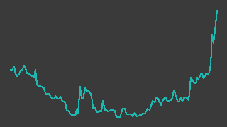

HEROZ（4382）
東証スタンダード／レポート更新 2026-10-09
IR情報 ↗株探 ↗

画像判定※・6か月・基準日 2026-10-09一行でいうと：将棋AI「将棋ウォーズ」から出発し、いまは生成AIの業務支援（HEROZ ASK・伴走型BtoB・BPO）とセキュリティ運用（子会社バリオセキュア）の2本柱で稼ぐ会社。今期（2027年4月期）は営業利益を前期比+53%の800百万円✓まで伸ばす計画で、第1四半期の営業利益は前年同期比+53.8%✓と計画並みの伸びで滑り出した。一方、経常利益の進捗は19.7%※にとどまり、株式交換で発行済株式数は約17%増えている。
週次アップデート最新 2026-W41・全 3 件
新しい週を上に置いている。過去の記述は書き換えず、そのまま残している。
2026-W41（2026-10-05 週）
ストップ高集計に複数回掲載され、出来高急増とともに株価が大きく上げた。
- 株価: 週間 +28.8%（854→1100円・採用終値ベース、照合成立 5日、週内 893〜1100円）
- 出来高: 前週比 +986.8%（今週 8,996,800株／前週 827,800株）※／信用倍率: 1.25倍（買残 475.6千株・売残 380.8千株、10/02時点）※
- 判定: 「調査」／開示: なし
- ニュース: 10/06 本日の【ストップ高／ストップ安】 引け S高＝ 12 銘柄 S安＝ 0 銘柄 (10月6日) 株探 ↗
- ニュース: 10/08 本日の【ストップ高／ストップ安】 引け S高＝ 16 銘柄 S安＝ 2 銘柄 (10月8日) 株探 ↗
- ニュース: 10/07 前日に動いた銘柄 part2ブロードバンドセキュリティ、辻・本郷ITコンサル、HEROZなど 株探 ↗
（解釈）10/6 と 10/8 のストップ高集計、10/6 のボリンジャー +3σ 上抜け集計に掲載された。「前日に動いた銘柄」にも 10/7・10/9 に名前が出ている。 出来高は前週の約10.9倍。見出しに個別の業績開示は無く、上げの材料はこの週の見出しからは特定できない。急伸後の反動の可能性に注意が要ると読める。判定は「調査」。
次週に見ること: ① 上げの材料となった開示・報道の特定（未確認） ② 急伸後の出来高と値動き
2026-W40（2026-09-28 週）
株探の「妙味株」に取り上げられたが、株価はほぼ横ばい。
- 株価: 週間 -0.2%（856→854円・採用終値ベース、照合成立 5日、週内 840〜858円）
- 出来高: 前週比 +154.8%（今週 827,800株／前週 324,900株）※／信用倍率: 1.8倍（買残 406.4千株・売残 225.7千株、09/25時点）※
- 判定: 「様子見(過熱)」／開示: なし
- ニュース: 09/27 今週の「妙味株」一本釣り！ ─ ＨＥＲＯＺ 株探 ↗
（解釈）9/27 に株探の「今週の『妙味株』一本釣り！」で取り上げられている（二次情報）。 出来高は前週の約2.5倍に増えたが終値はほぼ変わらず、記事を受けた買いと利益確定が拮抗した可能性がある。判定は「様子見(過熱)」。
次週に見ること: ① 出来高が高水準のまま続くか ② 適時開示の有無
2026-W39（2026-09-21 週）
台帳への登録週。1Q決算で上放れた後の水準（840〜860円台）を保ったまま週を終えた。
- 楽天証券のスクリーニング（成長株0830・per）通過により 2026-09-27 に監視を開始した（data/master.yaml の watch_reason）
- 採用終値は 9/18 の 843円✓ から 9/25 の 856円✓（+1.5%）。9/21〜23 は休場で、この週の取引は2日だけ。材料になる開示は無く、動いた理由は特定できていない
- 9/24 に譲渡制限付株式報酬の新株払込完了（英文の遅延開示。日本語版は 9/18）。規模は小さく、株価材料ではないと読める（https://kabutan.jp/disclosures/pdf/20260924/140120260924539282/ ・ https://kabutan.jp/disclosures/pdf/20260918/140120260918538542/ 、ともに 2026-09-27 取得・一次情報）
- 9/16・9/17 に株式会社エンヴァリスによるアナリスト・レポート公開の開示（https://kabutan.jp/disclosures/pdf/20260917/140120260917538122/ 、2026-09-27 取得・一次情報）。会社が費用を負担するスポンサード・レポートの可能性があり、中立的な第三者評価とは区別して読む（assumed: true。根拠: 会社自身が公開を開示している形式のため。費用負担の有無は未確認）
- 9/27 に株探が「今週の『妙味株』一本釣り！─ＨＥＲＯＺ」を掲載（https://kabutan.jp/stock/news?code=4382&b=n202609270018 、2026-09-27 取得・二次情報）。週明けに個人投資家の買いが入る材料になりうる
- 信用残（9/18 申込み分）は買残 338.7千株※・売残 214.8千株※・倍率 1.58倍※。決算前の 9/4 から買残・売残とも増えており、売残の増え方が大きい（https://kabutan.jp/stock/?code=4382 、2026-09-27 取得・二次情報）
次週に見ること：①妙味株記事を受けた週明けの出来高（9/14 の 729,700株 に次ぐ水準が出るか） ②856円 が 6か月の採用終値高値 890円✓（2026-04-16）に向かうか ③信用売残の増加が続くか
次期売上・利益推定対象 FY2027-04・作成済み・変数 5 個
作成済み 対象期 FY2027-04・起案 2026-09-27。検証済みデータと明示した仮定から機械計算した概算であり、会社計画でも的中予想でもない。推定 の付いた変数を疑うための頁。
会社計画・市場予想・実績との比較（百万円）
| 指標 | 前期実績 | 会社計画 | 市場予想 | 当台帳推定 | 市場予想比 |
|---|---|---|---|---|---|
| 売上 | 6,424 | 6,800 | — | 6,994 | — |
| 営業利益 | 523 | 800 | — | 769 | — |
市場予想: 売上高・営業利益のコンセンサスは見つけていない。IFIS株予報（https://kabuyoho.ifis.co.jp/index.php?action=tp1&sa=report&bcode=4382、 2026-09-27取得）には2027年4月期の経常利益のコンセンサス予想 600 百万円（会社予想 700 に対し「弱気」）だけが載っている。 経常利益は営業利益ではないので数値欄には載せない。みんかぶ（https://minkabu.jp/stock/4382/analyst_consensus、2026-09-27）は 403 で読めず。 比較対象は会社計画のみ
計算の分解
| セグメント | 式（値を代入） | 売上（百万円） |
|---|---|---|
| AIX事業（将棋ウォーズ等BtoC・HEROZ ASK・BtoB受託・AKM） | 937 × 4.4 = 4,122.8 | 4,123 |
| AI Security事業（バリオセキュア。セキュリティBPOのストック収益中心） | 709 × 4.05 = 2,871.45 | 2,871 |
変数と根拠
カードを押すと、その値の置き方（メモ・出典）が開く。推定 の変数から疑うこと。
AIX事業（将棋ウォーズ等BtoC・HEROZ ASK・BtoB受託・AKM）aix_q1_revenue937開示（一次）
AIX事業（将棋ウォーズ等BtoC・HEROZ ASK・BtoB受託・AKM）aix_annualize4.4推定
AI Security事業（バリオセキュア。セキュリティBPOのストック収益中心）sec_q1_revenue709開示（一次）
AI Security事業（バリオセキュア。セキュリティBPOのストック収益中心）sec_annualize4.05推定
全社op_margin0.11推定
感度 — この推定を最も動かす変数
各変数を +10% したときの営業利益の変化。上にある変数ほど、根拠を厚く確かめる価値がある。ただし op_margin だけは別扱い——営業利益 = 売上合計 × op_margin なので +10% は定義上つねに +10% になり、売上側の変数と大小を比べても意味が無い。
| 変数 | セグメント | 営業利益への影響 |
|---|---|---|
op_margin | 全社 定義上 | +10.0% 乗法モデルなので定義上つねに +10%。売上側の変数との大小比較には意味が無い（率の水準そのものを疑うこと） |
aix_annualize | AIX事業（将棋ウォーズ等BtoC・HEROZ ASK・BtoB受託・AKM） | +5.9% |
aix_q1_revenue | AIX事業（将棋ウォーズ等BtoC・HEROZ ASK・BtoB受託・AKM） | +5.9% |
sec_annualize | AI Security事業（バリオセキュア。セキュリティBPOのストック収益中心） | +4.1% |
sec_q1_revenue | AI Security事業（バリオセキュア。セキュリティBPOのストック収益中心） | +4.1% |
推定の変遷
過去の版は書き換えずに残す。数値感がどう変わってきたかが学習の履歴になる。
| 起案日 | 対象期 | 売上 | 営業利益 | 何を変えたか |
|---|---|---|---|---|
| 2026-09-27 | FY2027-04 | 6,994 | 769 | 初版（Claude 起案・人間未確認）。4月決算。報告セグメント2つ（AIX事業／AI Security事業＝子会社バリオセキュア）を それぞれ「今期1Q実績×年率換算係数」で置く。1Q（2026年5〜7月）のセグメント売上は2027年4月期第1四半期決算短信のセグメント注記 （https://www.release.tdnet.info/inbs/140120260911534909.pdf、2026-09-27取得）による。AIX 内部の分解（将棋ウォーズのプレミアム会員×単価、 HEROZ ASK の ARR、BtoB 受託の稼働案件×単価）は会員数・単価の開示が無く組めないため、セグメント単位で止めた。 会社計画は売上高 6,800・営業利益 800 百万円（fundamentals の採用値。前期比 +5.9%・+53.0%）。のれん償却前営業利益の計画は 960。 前期（FY2026-04）の四半期別セグメント売上は決算説明資料 p10（https://www.release.tdnet.info/inbs/140120260911535155.pdf、2026-09-27取得）の グラフの数値ラベル: AIX 810/873/891/1,015（計 3,589）、AI Security 706/713/699/724（計 2,842）。 前期1Qの AIX にはその後連結除外したストラテジット社の売上 79 が含まれ、今期1Qには 2026-05-01 連結の AKM コンサルティングが入っている |
会社概要この会社は何者か・財務の推移と健全性・今後の展望とリスク・値動きと市場の評価・出典・検証の記録
この会社は何者か
- 出自と現在の形：将棋対局アプリ「将棋ウォーズ」などのAI技術で知られる。現在は「HEROZ3.0／AI BPaaS」を掲げ、生成AI・AIエージェントで業務そのものを請け負う形（SaaS＋人手のBPO）へ舵を切っている（出典: 2027年4月期1Q決算短信）
- 報告セグメントは2つ（1Q の外部売上。決算短信のセグメント注記）
- AIX事業（外部売上 935百万円※）: BtoC（将棋ウォーズ・棋神アナリティクス等のサブスク）、HEROZ BtoB（顧客企業に入り込む共創型伴走支援「BEM」）、法人向けAIアシスタント SaaS「HEROZ ASK」、2026-05-01 連結の AKMコンサルティング（スタートアップ向け経理・人事BPO）、子会社エキストラ（AI研修。2026-08-03 に事業譲受を決議）
- AI Security事業（外部売上 709百万円※）: バリオセキュア（ゲートウェイ／エンドポイントのセキュリティ運用、バックアップ等。24時間365日の運用を月額で請け負うストック型）。2026-06-30 の株式交換で完全子会社化
- 稼ぎ方：売上の72.2%※がリカーリング（継続課金）売上（1Q 決算説明資料 p6）。セグメント利益は AI Security（272百万円※）が AIX（234百万円※）を上回り、そこから全社費用 327百万円※ を差し引いて営業利益になる構造
- 業種・市場：東証スタンダード、情報・通信業、4月決算
財務の推移と健全性
凡例は出典節の先頭を参照。表の数値はすべて2ソース照合済みの採用値（✓）。
出所: data/fundamentals/4382.csv の採用値（別サイト2つ以上が一致した値だけ）。11/11点を採用。
| 期 | 売上高（百万円） | 営業利益（百万円） | 経常利益（百万円） | 純利益（百万円） |
|---|---|---|---|---|
| 23/4期 | 2,980 | 257 | 216 | -574 |
| 24/4期 | 4,841 | 451 | 368 | -1,134 |
| 25/4期 | 5,929 | 306 | 228 | -177 |
| 26/4期 | 6,424 | 523 | 408 | 376 |
| 27/4期 会社計画 | 6,800 | 800 | 700 | 300 |
- 売上はM&Aで段を上げてきた。2022年4月期の 1,482百万円✓ から、バリオセキュアの連結（2023年4月期）を境に倍増した。今期計画は前期比+5.8%※ にとどまり、ストラテジット社の連結除外（前期1Qに売上 79百万円※）を吸収しながらの計画
- 営業黒字でも最終赤字が続いた。2023〜2025年4月期は営業黒字のまま純損失（2024年4月期は △1,134百万円✓）。要因（のれん・投資の減損等）は本レポートでは一次資料で確認していない
- 前期の純利益 376百万円✓ には一時益が入る。2026-06-08 の開示で、子会社株式売却益・法人税等調整額（益）の計上と暗号資産評価損を公表している。今期の純利益計画 300百万円✓ が前期を下回るのはこの反動と読める
- 四半期の推移（単独3か月・採用値✓）。行見出しは台帳の期間キーで、上から 26/4期の1Q〜4Q、27/4期の1Q（5〜7月）にあたる
| 四半期 | 売上高（百万円） | 営業利益（百万円） | 経常利益（百万円） |
|---|---|---|---|
| Q2025-05_2025-07 | 1,514 | 117 | 94 |
| Q2025-08_2025-10 | 1,584 | 141 | 118 |
| Q2025-11_2026-01 | 1,589 | 100 | 53 |
| Q2026-02_2026-04 | 1,737 | 165 | 143 |
| Q2026-05_2026-07 | 1,643 | 180 | 138 |
- 直近1Q の営業利益は前年同期比+53.8%、その前の4Q は +11.5%（前年同期 148百万円✓）。四半期の前年同期比で見ても増益が2四半期続いている（
src/screen.pyの警告なし、2026-09-27 実行） - 健全性：自己資本比率 58.7%✓（2026年4月期末）、1Q末は 68.3%※（決算短信記載。株式交換で非支配株主持分が資本剰余金に振り替わった）。現金同等物 3,367百万円✓、営業CF 647百万円✓（ともに2026年4月期）。有利子負債は 1,650百万円※（IR BANK のみ）
- 希薄化：株式交換で発行済株式数は 15,206,964株 から 17,789,313株 へ約17%※ 増えた（決算短信）。1株当たり利益の計画 17.28円※ はこの影響を織り込んだ値と短信は注記している。台帳の採用値は 16.87円✓ で食い違っており、取得元の反映時点の差の可能性がある（未確認）
今後の展望とリスク
会社計画（2027年4月期）：売上高 6,800百万円✓、営業利益 800百万円✓、経常利益 700百万円✓、純利益 300百万円✓、のれん償却前営業利益 960百万円※。1Q の進捗は売上 24.2%※、営業利益 22.5%※、経常利益 19.7%※（決算説明資料 p7）。
伸びしろとして会社が挙げているもの（1Q 決算短信・決算説明資料）:
- HEROZ BtoB：共創型伴走支援で案件が長期化・単価が上がり、1Q 売上は前年同期比+101.3%※、稼働案件数は+26.8%※
- HEROZ ASK：1Q 売上は前四半期比+25.9%※、2026年7月末の ARR 2.3億円※、累計契約顧客 約470社※。ただし AIX 全体の数%規模で、単独で業績を動かす段階にはない（estimates/4382.yaml の分解による）
- 「学ぶ→使う→任せる」：AI研修（エキストラ）→ HEROZ ASK → AI BPO（AKM）で顧客を段階的に深掘りする構想。効果はまだ数字に出ていない
- バリオセキュアの完全子会社化：2Q以降は同社の利益が100%親会社株主に帰属する（1Q は 42.8% のみ取り込み、非支配株主持分利益 44百万円※）。今期の純利益の押し上げ要因になる
リスク（解釈を含む）:
- 経常利益の計画達成：1Q 進捗 19.7%※ は4等分の 25% を下回る。前期も四半期の利益は右肩上がりではなく（3Q 単独 100百万円✓）、下期偏重の計画を達成できるかは未確定。市場予想（IFIS）の経常利益 600百万円※ は会社計画 700百万円 を下回る（estimates/4382.yaml の market_forecast）
- 販管費の増加：1Q の販管費は前年同期比+16.7%※（M&A関連費用・AKM の人件費）。M&A を続ける限り一時費用とのれん償却が利益を削る
- 成長の中身が片寄っている：AI Security の売上は前年同期比+0.3%※、将棋のBtoCは+0.6%※ と横ばい。伸びているのは HEROZ BtoB と ASK で、売上規模はまだ小さい
- LLM の外部依存：原価に LLM 利用料・サーバー代が乗る（決算短信）。モデル提供元の価格改定がそのまま原価に響く可能性がある
- 過去の最終赤字：2023〜2025年4月期は営業黒字で最終赤字だった。のれんの減損が再発すれば同じことが起こりうる（assumed: true。根拠: 過去3期の営業利益と純利益の乖離。減損の有無は一次資料で未確認）
次の決算：2027年4月期 第2四半期（5〜10月）決算。前年は12月中旬に開示しており、同時期と見込む（assumed: true。根拠: 2026年4月期の半期実績が台帳にあり、その開示時期からの類推。日程は会社未発表）。
値動きと市場の評価
出所: data/prices/daily.csv の採用終値（2つの取得元が一致した終値だけ）。ザラ場の高値・安値は照合を通っていないので使っていない。245/245点を採用、52週の採用終値 241営業日、出来事 4/4件を配置。
- 水準：2026-09-25 の採用終値 856円✓。52週の採用終値の高値は 1,190円✓（2025-10-08）、安値は 692円✓（2026-07-10）。高値からは約28%下、安値からは約24%上にいる
- 大きく動いた日（出来高は ※＝未照合）
- 2026-06-09：前日の 707円✓ から 807円✓（+14.1%）、出来高 662,200株※。前日引け後に前期の業績予想修正（子会社株式売却益の計上による純利益の大幅増額）を開示（株探「ＨＥＲＯＺが急動意、２６年４月期最終利益大幅増額受け買い戻しに点火」）
- 2026-09-14：前営業日の 757円✓ から 842円✓（+11.2%）、出来高 729,700株※（直近1年で最大）。9/11 引け後の1Q決算（経常+46%）を受けた動き（株探「ＨＥＲＯＺが３日ぶり急反発、ＢｔｏＢ事業好調で５～７月期経常益４６％増」）
- バリュエーション（株探 2026-09-27 時点・参考値）：PER 51.0倍※、PBR 2.65倍※、時価総額 153億円※、配当なし（今期予想も 0円）
- 需給：信用倍率 1.58倍※（9/18）。売残が多く、踏み上げ（買い戻し）が株価を押し上げやすい需給にある。6/9 の上昇も株探は「買い戻し」と表現している
- 市場の評価：経常利益のコンセンサス（IFIS）は会社計画を下回る「弱気」で、市場は利益計画に懐疑的と読める。一方、1Q で利益の伸びが確認されたことで株価は決算前の 750円台 から一段上がった
出典
凡例: ✓=2ソース照合済みの採用値 ／ ※=未照合・参考値 ／ †=決算短信（一次情報）から直接
| 区分 | 資料 | URL | 取得日 |
|---|---|---|---|
| 一次 | 2027年4月期 第1四半期決算短信（2026-09-11） | https://www.release.tdnet.info/inbs/140120260911534909.pdf | 2026-09-27 |
| 一次 | 2027年4月期 第1四半期決算説明資料（2026-09-11） | https://www.release.tdnet.info/inbs/140120260911535155.pdf | 2026-09-27 |
| 一次 | 2026年4月期 通期連結業績予想の修正並びに子会社株式売却益等の計上に関するお知らせ（2026-06-08） | https://kabutan.jp/disclosures/pdf/20260608/140120260608565515/ | 2026-09-27 |
| 一次 | 2026年4月期 決算短信（2026-06-12） | https://kabutan.jp/disclosures/pdf/20260612/140120260612569450/ | 2026-09-27 |
| 一次 | 当社子会社における事業譲受に関するお知らせ（2026-08-03） | https://kabutan.jp/disclosures/pdf/20260803/140120260803506831/ | 2026-09-27 |
| 一次 | 譲渡制限付株式報酬としての新株式の払込完了に関するお知らせ（2026-09-18） | https://kabutan.jp/disclosures/pdf/20260918/140120260918538542/ | 2026-09-27 |
| 一次 | 株式会社エンヴァリスによる当社アナリスト・レポート公開のお知らせ（2026-09-17） | https://kabutan.jp/disclosures/pdf/20260917/140120260917538122/ | 2026-09-27 |
| 一次 | 会社IRページ | https://heroz.co.jp/ir/ | 2026-09-27 |
| 二次 | 株探 銘柄ページ（PER・PBR・時価総額・信用残・業種） | https://kabutan.jp/stock/?code=4382 | 2026-09-27 |
| 二次 | 株探「ＨＥＲＯＺが３日ぶり急反発、ＢｔｏＢ事業好調で５～７月期経常益４６％増」（2026-09-14） | https://kabutan.jp/stock/news?code=4382&b=n202609140220 | 2026-09-27 |
| 二次 | 株探「ＨＥＲＯＺが急動意、２６年４月期最終利益大幅増額受け買い戻しに点火」（2026-06-09） | https://kabutan.jp/stock/news?code=4382&b=n202606090247 | 2026-09-27 |
| 二次 | 株探「今週の『妙味株』一本釣り！─ＨＥＲＯＺ」（2026-09-27） | https://kabutan.jp/stock/news?code=4382&b=n202609270018 | 2026-09-27 |
| 二次 | IFIS株予報（経常利益コンセンサス） | https://kabuyoho.ifis.co.jp/index.php?action=tp1&sa=report&bcode=4382 | 2026-09-27 |
| 台帳 | 財務の採用値 | data/fundamentals/4382.csv | — |
| 台帳 | 株価の採用終値・出来高 | data/prices/daily.csv | — |
| 台帳 | 信用残 | data/margin/4382.csv | — |
未確認のまま残しているもの:
- 2023〜2025年4月期の最終赤字の要因（減損か、その他の特別損失か）
- 2026-06-26 に開示された「2026年4月期 決算短信の一部訂正（数値データ訂正）」の中身（https://kabutan.jp/disclosures/pdf/20260626/140120260626581607/ 未読）
- エンヴァリスのアナリスト・レポートの費用負担の有無と中身
- 第2四半期決算の開示日
- 1株当たり利益の計画値（短信 17.28円 と台帳採用値 16.87円）の食い違いの理由
記述の裏取り
本文の記述を、書いたのとは別の文脈が出典URLを取り直して1件ずつ判定した結果（読み方）。
検証日 2026-09-27検証した記述 47裏付けあり 31この出典では確かめられない（別の出典が要る） 4確かめられない（到達不可・出典なし） 12再取得した出典 15
裏が取れなかった記述
出典を取り直しても確かめられなかったもの。本文に残っているが、確認済みとして読んではいけない。
| 判定 | 本文の記述 | 再取得して分かったこと | 出典 | どうするか |
|---|---|---|---|---|
| 確かめられない（到達不可・出典なし） | 株式交換で発行済株式数は 15,206,964株 から 17,789,313株 へ約17%※ 増えた（決算短信） | 出典の決算短信PDFは再取得200だがこの道具はPDFをテキスト化せず、data/tanshin/4382.csv も無い。株数 15,206,964・17,789,313 は確かめられない。株探（再取得200）の現在の「発行済株式数 | 17,856,708 株」とは桁が整合する。17,789,313/15,206,964 は 1.170 で「約17%」は株数どうしの式としては整合。 | 一次情報 出典 ↗ 出典 ↗ | 短信の株式数を data/tanshin に機械抽出するか、株数の載ったHTML出典を足す |
| 確かめられない（到達不可・出典なし） | 規模は小さく、株価材料ではないと読める | 再取得200だが株探の開示ページは題名と「PDFを別画面で開く」だけで、発行株数・金額は本文から取れない。規模は確かめられない。 | 一次情報 出典 ↗ | 発行株数を出典から明記する（例: 株数の載ったHTML出典） |
| この出典では確かめられない（別の出典が要る） | 9/16・9/17 に株式会社エンヴァリスによるアナリスト・レポート公開の開示 | 再取得200。題名は「2026年09月17日 開示情報 - 株式会社エンヴァリスによる当社アナリスト・レポート公開のお知らせ」で 9/17 は確認。9/16 の開示はレポート記載のどの出典にも無い。 | 二次情報 出典 ↗ | 9/16 の開示の出典を足すか、日付を 9/17 のみにする |
| 確かめられない（到達不可・出典なし） | 会社が費用を負担するスポンサード・レポートの可能性があり | 再取得200だが開示ページは題名のみで本文PDFは読めない。費用負担の有無は確かめられない（本文も assumed: true・未確認と自己申告している）。 | 一次情報 出典 ↗ | 開示PDF本文またはエンヴァリスのレポート本文を出典に足す |
| 確かめられない（到達不可・出典なし） | AIX事業（外部売上 935百万円※） | 決算短信PDFは再取得200だがテキスト化されず、セグメント外部売上 935・709 は確認できない。整合性のみ: 935+709=1644 ≈ 連結売上 Q2026-05_2026-07 revenue=1643（採用値、OK|ROUNDING）。 | 一次情報 出典 ↗ data/fundamentals/4382.csv | セグメント数値を data/kpi か tanshin 抽出に載せて機械照合できるようにする |
| 確かめられない（到達不可・出典なし） | 売上の72.2%※がリカーリング（継続課金）売上（1Q 決算説明資料 p6） | 決算説明資料PDFは再取得200だがテキスト化されず 72.2% は確認できない。 | 一次情報 出典 ↗ | 説明資料の該当値を機械照合できる形で取り込むか、HTML出典を足す |
| 確かめられない（到達不可・出典なし） | セグメント利益は AI Security（272百万円※）が AIX（234百万円※）を上回り、そこから全社費用 327百万円※ を差し引いて営業利益になる構造 | 短信PDFはテキスト化されず個々の値は確認できない。整合性のみ: 272+234−327=179 ≈ Q2026-05_2026-07 operating_income=180（採用値 OK）。 | 一次情報 出典 ↗ data/fundamentals/4382.csv | セグメント損益を機械照合できる形で取り込む |
| この出典では確かめられない（別の出典が要る） | 子会社エキストラ（AI研修。2026-08-03 に事業譲受を決議） | 再取得200。題名「2026年08月03日 開示情報 - 当社子会社における事業譲受に関するお知らせ」で、子会社による事業譲受の開示が 8/3 にあったことは確認。子会社名がエキストラであること・AI研修事業であることは題名に無く、本文PDFは読めない。 | 二次情報 出典 ↗ | 子会社名と事業内容が読める出典を足す |
| 確かめられない（到達不可・出典なし） | 2026-06-30 の株式交換で完全子会社化 | レポート記載の再取得可能な出典（HTML）に株式交換・完全子会社化の日付の記載は無い。短信・説明資料PDFはテキスト化されず確認できない。 | 出典なし — | 株式交換の効力発生の適時開示を出典に足す |
| 確かめられない（到達不可・出典なし） | ストラテジット社の連結除外（前期1Qに売上 79百万円※） | 短信・説明資料PDFはテキスト化されず、HTML出典にストラテジットの記載は無い。確かめられない。 | 一次情報 出典 ↗ | 連結除外の開示を出典に足す |
| 確かめられない（到達不可・出典なし） | 1株当たり利益の計画 17.28円※ はこの影響を織り込んだ値と短信は注記している。台帳の採用値は 16.87円✓ | FY2027-04 eps_plan=16.87（OK|ROUNDING）は確認。株探（再取得200）も「予 2027.04 | … | 16.8」。17.28円と短信の注記は、短信PDFがテキスト化されず確認できない。 | 一次情報 出典 ↗ data/fundamentals/4382.csv 出典 ↗ | 短信の1株当たり予想利益を機械抽出して採用値との差を確かめる |
| 確かめられない（到達不可・出典なし） | 1Q 売上は前年同期比+101.3%※、稼働案件数は+26.8%※ | 株探「妙味株」記事（再取得200）に「同期間の稼働案件数が同26.8％増」で +26.8% は確認。+101.3% は記事・HTML出典に無く、説明資料PDFはテキスト化されず確認できない。 | 一次情報 出典 ↗ 出典 ↗ | HEROZ BtoB の売上成長率が読める出典を足す |
| 確かめられない（到達不可・出典なし） | 2026年7月末の ARR 2.3億円※、累計契約顧客 約470社※ | 株探「妙味株」記事（再取得200）に「7月末時点の累計契約顧客数は約470社まで拡大」で約470社は確認。ARR 2.3億円は記事に無く、説明資料PDFはテキスト化されず確認できない。 | 一次情報 出典 ↗ 出典 ↗ | ARR の出典を機械で読める形で足す |
| 確かめられない（到達不可・出典なし） | 1Q の販管費は前年同期比+16.7%※（M&A関連費用・AKM の人件費） | 短信PDFはテキスト化されず +16.7% と内訳は確認できない。 | 一次情報 出典 ↗ | 販管費の実額を機械照合できる形で取り込む |
| この出典では確かめられない（別の出典が要る） | 売残が多く、踏み上げ（買い戻し）が株価を押し上げやすい需給にある | 株探（再取得200）・margin.csv とも 9/18 は買い残338.7千株・売り残214.8千株・倍率1.58倍で、買残が売残を上回る（買い長）。株探 6/9 記事（再取得200）の「信用倍率０．８８倍と売り長」「貸株規制対象」は6月時点の話で、現在の売り長を示す出典は無い。 | 二次情報 出典 ↗ data/margin/4382.csv | 「売残が9/4比+55%と増えた」等、出典で言える形に言い換えるか落とす |
| この出典では確かめられない（別の出典が要る） | | 一次 | 会社IRページ | https://heroz.co.jp/ir/ | 2026-09-27 | | 再取得200だが本文682字で「IRトップ」「決算短信」「IRニュース一覧」等のナビゲーションのみ（目次だけ）。本文のどの記述もこのページ単体では裏付けられない。 | 一次情報 出典 ↗ | 一次の出典は個別の開示・資料のURLを挙げる |
裏付けが取れた記述 31件
| 判定 | 本文の記述 | 再取得して分かったこと | 出典 | どうするか |
|---|---|---|---|---|
| 裏付けあり | 今期（2027年4月期）は営業利益を前期比+53%の800百万円✓まで伸ばす計画 | 採用値 FY2027-04 operating_income_plan=800（OK）・FY2026-04 operating_income=523（OK）。800/523−1=+52.96%→+53%。IFIS（再取得200）の業績推移にも「営業利益 | 306 | 523 70.9 % | 800 53.0 %」。 | 検証済みデータdata/fundamentals/4382.csv 出典 ↗ | — |
| 裏付けあり | 第1四半期の営業利益は前年同期比+53.8%✓と計画並みの伸びで滑り出した | 採用値 Q2026-05_2026-07 operating_income=180（OK）・Q2025-05_2025-07 operating_income=117（OK|ROUNDING）。180/117−1=+53.85%。screen.screen_one('4382') の q0_yoy_pct=53.846。ただし株探「妙味株」記事（再取得200）は「営業利益が同52.8％増の1億8000万円」と書いており、百万円未満の原数値ベースでは +52.8%。 | 検証済みデータdata/fundamentals/4382.csv src/screen.py 出典 ↗ | 採用値（百万円単位）どうしの計算であることを明記するか、会社発表ベースの +52.8% を併記する（人間判断） |
| 裏付けあり | 経常利益の進捗は19.7%※にとどまり | IFIS（再取得200）に「経常利益 (1Q) | 138」「進捗率 | 19.7 %」。採用値 Q2026-05_2026-07 ordinary_income=138（OK）/ FY2027-04 ordinary_income_plan=700（OK）=19.71%。 | 二次情報 出典 ↗ data/fundamentals/4382.csv | — |
| 裏付けあり | 採用終値は 9/18 の 843円✓ から 9/25 の 856円✓（+1.5%）。9/21〜23 は休場で、この週の取引は2日だけ | daily.csv 4382: 2026-09-18 close=843.0（OK）・2026-09-24 close=838.0（OK）・2026-09-25 close=856.0（OK）。9/21〜9/23 の行なし。856/843−1=+1.54%。 | 検証済みデータdata/prices/daily.csv | — |
| 裏付けあり | 9/24 に譲渡制限付株式報酬の新株払込完了（英文の遅延開示。日本語版は 9/18） | 株探の開示ページ（再取得200）の題名: 「2026年09月24日 開示情報 - [Delayed] Notice Concerning Completion of Payment for New Shares as Remuneration for Restricted Stock」「2026年09月18日 開示情報 - 譲渡制限付株式報酬としての新株式の払込完了に関するお知らせ」。本文PDFは読めていない。 | 二次情報 出典 ↗ 出典 ↗ | — |
| 裏付けあり | 9/27 に株探が「今週の『妙味株』一本釣り！─ＨＥＲＯＺ」を掲載 | 再取得200。「2026年09月27日09時00分」「今週の「妙味株」一本釣り！ ─ ＨＥＲＯＺ」「【目標株価】1200円（25日終値856円）」。 | 二次情報 出典 ↗ | — |
| 裏付けあり | 信用残（9/18 申込み分）は買残 338.7千株※・売残 214.8千株※・倍率 1.58倍※ | 株探（再取得200）の信用取引表「09/18 | 214.8 | 338.7 | 1.58」（売り残・買い残・倍率）。data/margin/4382.csv 2026-09-18 long=338.7・short=214.8・ratio=1.58（OK）。 | 二次情報 出典 ↗ data/margin/4382.csv | — |
| 裏付けあり | 決算前の 9/4 から買残・売残とも増えており、売残の増え方が大きい | 9/04 売残138.7・買残259.3 → 9/18 売残214.8・買残338.7（株探・margin.csv とも同値）。増加率は売残 214.8/138.7−1=+54.9%、買残 338.7/259.3−1=+30.6%で率では売残が大きい。増加株数は買残+79.4千株・売残+76.1千株で株数では買残がわずかに大きい。 | 検証済みデータdata/margin/4382.csv 出典 ↗ | 「増え方」が率であることを明記する |
| 裏付けあり | 9/14 の 729,700株 に次ぐ水準が出るか | daily.csv 2026-09-14 volume=729700（行 status OK）。2025-09-29〜2026-09-25 の 4382 行で volume 最大は 2026-09-14。出来高自体は照合対象外（本文も ※）。 | 検証済みデータdata/prices/daily.csv | — |
| 裏付けあり | 6か月の採用終値高値 890円✓（2026-04-16） | daily.csv 2026-03-25〜2026-09-25 の status OK 行で close 最大は 2026-04-16 close=890.0。 | 検証済みデータdata/prices/daily.csv | — |
| 裏付けあり | | 24/4期 | 4,841 | 451 | 368 | -1,134 | | FY2024-04 revenue=4841（OK|ROUNDING）・operating_income=451（OK）・ordinary_income=368（OK|ROUNDING）・net_income=-1134（OK|ROUNDING）。 | 検証済みデータdata/fundamentals/4382.csv | — |
| 裏付けあり | | 26/4期 | 6,424 | 523 | 408 | 376 | | FY2026-04 revenue=6424（OK|ROUNDING）・operating_income=523（OK）・ordinary_income=408（OK）・net_income=376（OK）。 | 検証済みデータdata/fundamentals/4382.csv | — |
| 裏付けあり | | 27/4期 会社計画 | 6,800 | 800 | 700 | 300 | | FY2027-04 revenue_plan=6800・operating_income_plan=800・ordinary_income_plan=700・net_income_plan=300（いずれも OK）。 | 検証済みデータdata/fundamentals/4382.csv | — |
| 裏付けあり | 今期計画は前期比+5.8%※ にとどまり | 株探「妙味株」記事（再取得200）に「売上高68億円（前期比5.8％増）」。一方 IFIS（再取得200）は「6,800 5.9 %」、株探銘柄ページ（再取得200）は前期比「+5.9」、採用値どうしは 6800/6424−1=+5.85%。百万円未満の原数値で 5.8% と 5.9% に分かれる。 | 二次情報 出典 ↗ 出典 ↗ data/fundamentals/4382.csv | — |
| 裏付けあり | 2023〜2025年4月期は営業黒字のまま純損失（2024年4月期は △1,134百万円✓） | operating_income FY2023-04=257・FY2024-04=451・FY2025-04=306（いずれも OK系）、net_income FY2023-04=-574・FY2024-04=-1134・FY2025-04=-177（いずれも OK系）。 | 検証済みデータdata/fundamentals/4382.csv | — |
| 裏付けあり | 2026-06-08 の開示で、子会社株式売却益・法人税等調整額（益）の計上と暗号資産評価損を公表している | 開示ページ（再取得200）の題名「2026年06月08日 開示情報 - 2026年４月期 通期連結業績予想の修正並びに子会社株式売却益、法人税等調整額（益）及び暗号資産評価損の計上に関するお知らせ」。株探記事（再取得200）「最終利益は従来予想の５０００万円から３億７６００万円に大幅増額」「連結子会社の株式譲渡に伴う売却益計上が反映された」。 | 二次情報 出典 ↗ 出典 ↗ | — |
| 裏付けあり | | Q2026-05_2026-07 | 1,643 | 180 | 138 | | Q2026-05_2026-07 revenue=1643（OK|ROUNDING）・operating_income=180（OK）・ordinary_income=138（OK）。他の4行（1,514/117/94、1,584/141/118、1,589/100/53、1,737/165/143）も採用値と一致。 | 検証済みデータdata/fundamentals/4382.csv | — |
| 裏付けあり | その前の4Q は +11.5%（前年同期 148百万円✓） | Q2026-02_2026-04 operating_income=165（OK）・Q2025-02_2025-04=148（OK）。165/148−1=+11.49%。screen.screen_one('4382') q1_yoy_pct=11.486。 | 検証済みデータdata/fundamentals/4382.csv src/screen.py | — |
| 裏付けあり | （src/screen.py の警告なし、2026-09-27 実行） | 2026-09-27 に screen.screen_one('4382') を直接呼び出し（master.yaml を開かない経路）、flags=[]・render 出力「警告なし」。q0 +53.8%・q1 +11.5%・通期 +70.9%・計画 +53.0%。 | 検証済みデータsrc/screen.py | — |
| 裏付けあり | 自己資本比率 58.7%✓（2026年4月期末）、1Q末は 68.3%※ | FY2026-04 equity_ratio=58.7（OK）。Q2026-05_2026-07 equity_ratio は SINGLE_SOURCE で value_primary=68.3（採用値ではなく、本文は ※ で明示）。振替の理由部分は短信PDFが読めず未確認。 | 検証済みデータdata/fundamentals/4382.csv | — |
| 裏付けあり | 現金同等物 3,367百万円✓、営業CF 647百万円✓（ともに2026年4月期）。有利子負債は 1,650百万円※（IR BANK のみ） | FY2026-04 cash_equivalents=3367（OK|ROUNDING）・operating_cf=647（OK|ROUNDING）・interest_bearing_debt は SINGLE_SOURCE（irbank_bs、value_primary=1650）。 | 検証済みデータdata/fundamentals/4382.csv | — |
| 裏付けあり | 1Q の進捗は売上 24.2%※、営業利益 22.5%※、経常利益 19.7%※ | 採用値: 1643/6800=24.16%、180/800=22.50%、138/700=19.71%。IFIS（再取得200）「進捗率 | 19.7 %」。 | 検証済みデータdata/fundamentals/4382.csv 出典 ↗ | — |
| 裏付けあり | 市場予想（IFIS）の経常利益 600百万円※ は会社計画 700百万円 を下回る | IFIS（再取得200）「コンセンサス予想 | 75 | -- | -- | 600」「経常利益予想 増益率 | 600 47.1 %」「会社予想 2026/09/11 700 71.6 %」。 | 二次情報 出典 ↗ | — |
| 裏付けあり | 前年は12月中旬に開示しており | IFIS（再取得200）の前期 202604 進ちょく結果「(12/12) 212 52.0 %」（中間）。前年の2Q開示は 12/12。 | 二次情報 出典 ↗ | — |
| 裏付けあり | 2026-09-25 の採用終値 856円✓。52週の採用終値の高値は 1,190円✓（2025-10-08）、安値は 692円✓（2026-07-10）。高値からは約28%下、安値からは約24%上にいる | daily.csv status OK 行（2025-09-29〜2026-09-25）で close 最大 2025-10-08=1190.0、最小 2026-07-10=692.0、2026-09-25=856.0。856/1190=0.719（約28%下）、856/692=1.237（約24%上）。 | 検証済みデータdata/prices/daily.csv | — |
| 裏付けあり | 2026-06-09：前日の 707円✓ から 807円✓（+14.1%）、出来高 662,200株※ | 2026-06-08 close=707.0（OK）・2026-06-09 close=807.0（OK）・volume=662200。807/707−1=+14.14%。 | 検証済みデータdata/prices/daily.csv | — |
| 裏付けあり | 2026-09-14：前営業日の 757円✓ から 842円✓（+11.2%）、出来高 729,700株※（直近1年で最大） | 2026-09-11 close=757.0（OK）・2026-09-14 close=842.0（OK）・volume=729700。842/757−1=+11.23%。2025-09-29以降の 4382 行で volume 最大。 | 検証済みデータdata/prices/daily.csv | — |
| 裏付けあり | 9/11 引け後の1Q決算（経常+46%）を受けた動き | 再取得200（本文が文字化けで返り、ptcp154→UTF-8 に戻して読んだ）。「同社は前週末１１日の取引終了後、２７年４月期第１四半期（５～７月）の連結決算を発表。売上高は前年同期比８．５％増の１６億４３００万円、経常利益は同４６．２％増の１億３８００万円となった」。 | 二次情報 出典 ↗ | — |
| 裏付けあり | PER 51.0倍※、PBR 2.65倍※、時価総額 153億円※、配当なし（今期予想も 0円） | 株探（2026-09-27 再取得200）「51.0 倍 | 2.65 倍 | － ％ | 1.58 倍」「時価総額 | 153 億円」「予 2027.04 | 68.0 | 7.0 | 3.0 | 16.8 | 0.0」。2026-09-25 終値ベースの時点値。 | 二次情報 出典 ↗ | — |
| 裏付けあり | 6/9 の上昇も株探は「買い戻し」と表現している | 再取得200。題名「ＨＥＲＯＺが急動意、２６年４月期最終利益大幅増額受け買い戻しに点火」、本文「空売り買い戻しを誘発した場合は戻り足が一気に加速する可能性がある」。 | 二次情報 出典 ↗ | — |
| 裏付けあり | 2026-06-26 に開示された「2026年4月期 決算短信の一部訂正（数値データ訂正）」の中身 | 再取得200。題名「2026年06月26日 開示情報 - （訂正・数値データ訂正）「2026年４月期 決算短信〔日本基準〕（連結）」の一部訂正について」で開示の存在は確認。中身は本文の自己申告どおり未読（PDF）。 | 二次情報 出典 ↗ | 訂正内容が採用値（FY2026-04）に影響しないか確認する |
この欄の材料
検証した時刻 2026-09-27T17:00:00+09:00。記録は data/verification/4382.yaml（append-only）。
実際に取り直した出典
- https://heroz.co.jp/ir/ ↗（HTTP 200）
- https://kabutan.jp/stock/?code=4382 ↗（HTTP 200）
- https://kabutan.jp/disclosures/pdf/20260924/140120260924539282/ ↗（HTTP 200）
- https://kabutan.jp/disclosures/pdf/20260918/140120260918538542/ ↗（HTTP 200）
- https://kabutan.jp/disclosures/pdf/20260917/140120260917538122/ ↗（HTTP 200）
- https://kabutan.jp/stock/news?code=4382&b=n202609270018 ↗（HTTP 200）
- https://www.release.tdnet.info/inbs/140120260911534909.pdf ↗（HTTP 200）
- https://www.release.tdnet.info/inbs/140120260911535155.pdf ↗（HTTP 200）
- https://kabutan.jp/disclosures/pdf/20260608/140120260608565515/ ↗（HTTP 200）
- https://kabutan.jp/disclosures/pdf/20260612/140120260612569450/ ↗（HTTP 200）
- https://kabutan.jp/disclosures/pdf/20260803/140120260803506831/ ↗（HTTP 200）
- https://kabutan.jp/stock/news?code=4382&b=n202609140220 ↗（HTTP 200）
- https://kabutan.jp/stock/news?code=4382&b=n202606090247 ↗（HTTP 200）
- https://kabuyoho.ifis.co.jp/index.php?action=tp1&sa=report&bcode=4382 ↗（HTTP 200）
- https://kabutan.jp/disclosures/pdf/20260626/140120260626581607/ ↗（HTTP 200）
機械抽出に委ねている出典
毎週コードが表を抜いて突き合わせているもの。人が読み直すより、そちらの記録のほうが強い。
- https://kabutan.jp/stock/?code=4382 ↗ →
data/margin/4382.csv
数値の検証状況
2つの取得元で一致した値だけを採用し、欠測は0で埋めない。この銘柄でどこまで確かめられているかの開示（読み方）。
2ソース照合済み 1152ソースが食い違う 21ソースのみ 309決算短信から直接 0株価の採用終値 251/280日
| 図 | 数値の出どころ | 状態 |
|---|---|---|
events_52w | 照合済み検証済みCSVから自動で組み立て | 245/245点すべて採用値 |
revenue_10y | 照合済み検証済みCSVから自動で組み立て | 11/11点すべて採用値 |
2つの取得元が食い違った項目
どちらが正しいか決められないため、どちらの値も採用していない。この項目を本文で断定形で書いてはいけない。
2026/4 ROA、2026/4 ROE
この欄の材料
- 財務数値:
data/fundamentals/4382.csv（426行）— 2サイトの表を機械的に抜いて突き合わせた結果 - 決算短信:
data/tanshin/4382.csv（0行・開示日 —）— PDF本文からの抽出 - 株価:
data/prices/daily.csvのclose。始値・高値・安値・出来高は主ソースのみで照合を通っていないため、図には使っていない